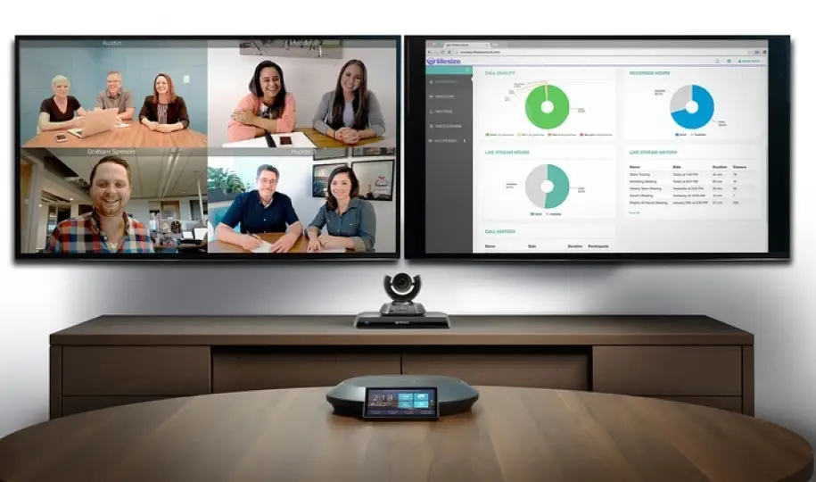

Умные устройства для умного сотрудничества
Линейка оборудования для аудио- и видеоконференций создана на базе plug-and-play устройств для простоты использования и предназначена для того, чтобы вписываться в рабочий процесс существующих инструментов, которые используются повседневно. Lifesize предлагает широкий ассортимент продуктов для видеоконференцсвязи - это профессиональные поворотные камеры, спикерфоны, кодеки для трансляции видеопотока, различные аксессуары для удобства эксплуатации и многое другое.